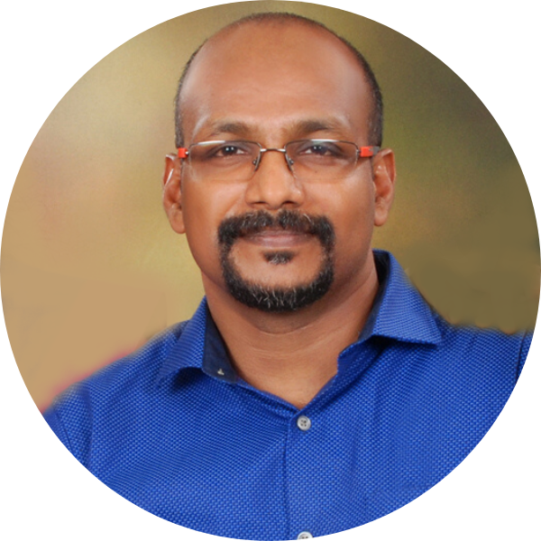

Welcome to my website

I am Working as a faculty in the Department of Computer Science and Engineering,
Karunya Institute of Technology and Sciences (KITS), (Deemed to be University),
Coimbatore. I holds the additional responsibility of System Administrator and Trainer
in a research lab "SUSE Center of Excellence for Cloud Computing" a joint venture
between SUSE Software India Pvt Ltd, Bangalore, India, and KITS. I have a decade of
experience in IT operations teaching and training. My research interest includes ,
IoT, HealthCare and Blockchain. Currently, I am pursuing Ph.D. in KITS.
I holds a masters degree in Computer Science and Engineering from Dr.MGR Eduational
and Research Institute, Chennai. I have completed my Bachelors in Computer Science
and Engineering from Anna University Affiliated College (CAPE) and I went to MG
polytechnic for Diploma in Computer Technology.
I offers consultancy and training to corporates and students in technologies such as
Cloud, Virtualization, DevOps and Linux.
My hobbies are playing shuttle badminton and watching shuttle badminton matches
and Soccer matches.